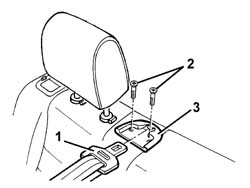

7050A40 Centre/ rear. seat belt MOUNTING TRIM - R.R.
- Path
- Procedures > 70 FITTINGS > 7050 REAR SEATS > 7050A rear seat assembly > 7050A40 Centre/ rear. seat belt MOUNTING TRIM - R.R.
- Kind
- repair procedure (removal / refitting; the operation number is the code)
- Applies to
- all engines; all production periods
- Interactive page
- https://sloeber94.github.io/elrnDB-a156/en/#/3238925
Applies to: all engines; all production periods; only with equipment: Station Wagon
 Removing
Removing
 Refitting
Refitting1. Release the seat belt from the trim.
2. Unscrew the bolts.
3. Remove the trim.

Applies to: all engines; all production periods; only with equipment: Station Wagon
Refitting
RemovingCheck that the trim is not damaged.
Position the trim and fix it with the bolts.
Engage the seat belt on the trim.